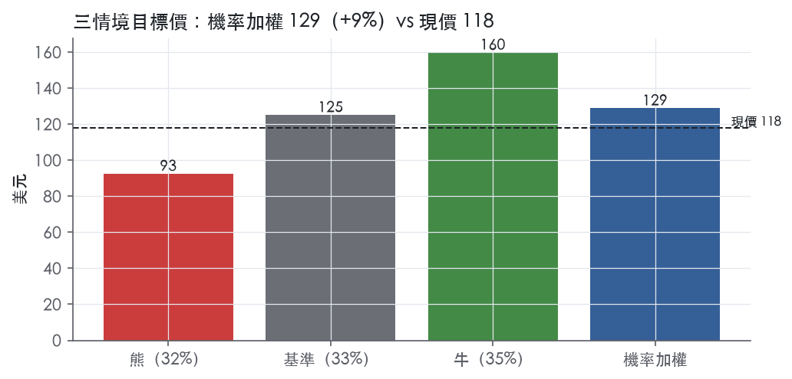
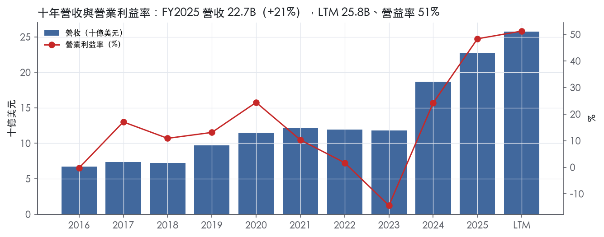
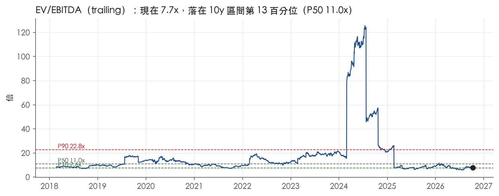
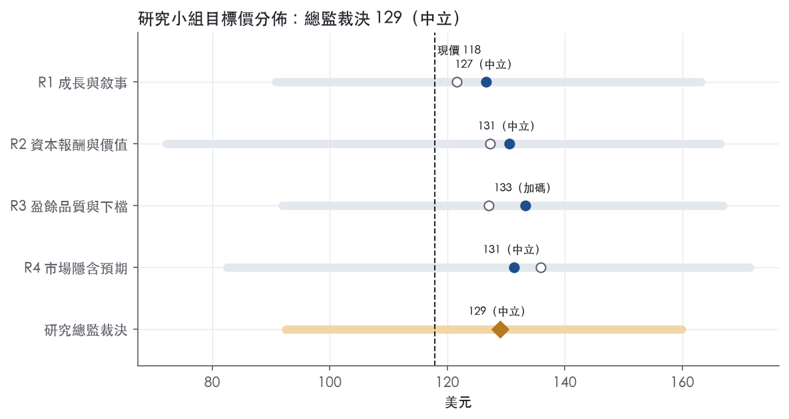
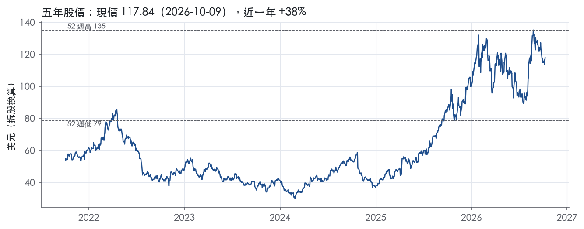

評等總表 › 原物料 › NEM
高峰盈餘配谷底倍數，報酬僅持平同業，中性｜評等 中立｜目標價 129
| 評等 | 中立（邊界，鄰近加碼） |
| 12 個月目標價 | 129 美元 |
| 現價 | 117.84 美元（2026-10-09） |
| 預期報酬 | 股價 +9.4%＋股息 0.9%＝總報酬 +10.3%；同業籃門檻 8.0%，超額 +2.3% |
| 估值方法 | EV/EBITDA 8.0x，套在未來四季的EBITDA |
| 三情境 | 熊 93／基準 125／牛 160 |
| 研究流程 | 四位研究員兩輪辯論＋研究總監裁決 |
| 資料來源 | SEC EDGAR XBRL、Tiingo、FRED（全免費） |
高峰盈餘配谷底倍數，報酬僅持平同業，中性（研究總監裁決，四位研究員兩輪辯論後）
評等 中立（邊界，鄰近加碼）｜12 個月目標價 129 美元（總監三情境機率加權 127 與研究員中位數 131 各半）｜現價 117.84（2026-10-09）
預期報酬：股價 +9.4%＋股息 0.9%＝總報酬 +10.3%。同業籃門檻 8.0%，超額 +2.3%，離加碼的分界不到三個百分點，屬邊界評等（落在其他級距的機率約三成）。
估值方法：EV/EBITDA 8.0x，套在未來四季的EBITDA。三情境：熊 93（32%）／基準 125（33%）／牛 160（35%）。
什麼會讓研究總監改變看法：FY2026Q3 營益率跌破 45% 或 FY2026 AISC 年增超過 10%，我下修基準營益率並把熊機率提高；取得分資產 NAV 顯示現價隱含長期金價低於 3,500，或事後實現前瞻帶 P50 明顯高於 8.0x，我轉看多。
| 過去四季（實際，FY2026Q2） | 未來四季 | 第 5–8 季 | 第 9–12 季 | |
|---|---|---|---|---|
| 營收（B） | 25.8B | 27.3B | 28.1B | 29.0B |
| 營收成長 | 25.2% | 6.0% | 3.0% | 3.0% |
| 營業利益率 | 51.3% | 47.0% | 45.0% | 44.0% |
| EPS（美元） | 7.90 | 8.59 | 8.65 | 8.89 |
| EPS 成長 | 42.4% | 8.7% | 0.6% | 2.8% |
| 每股股息（美元） | 1.02 | 1.02 | 1.02 | 1.02 |
| P/E（現價） | 14.9x | 13.7x | 13.6x | 13.3x |
| 股息殖利率（現價） | 0.9% | 0.9% | 0.9% | 0.9% |
過去四季為申報數字；預測為研究總監的假設、程式計算。倍數與殖利率都用現價計算，用來看現價對應各期獲利的高低。
| 情境 | 機率（歷史） | 故事 | 未來四季營收成長 | 第 5–8 季營益率 | 倍數 | 目標價 | 股價漲跌 |
|---|---|---|---|---|---|---|---|
| 熊 | 32%（35%） | 金價回到 FY2025 均價 3,432 再略低（NTM 末約 3,400、Q5–Q8 約 3,200，假設），AISC 升至約 1,800、維持性支出不降、回購暫停；對應風險表第 1 條金價回落，第 2 條 AISC 放大 | -15.0% | 40.0% | 8.0x | 93 | -21.5% |
| 基準 | 33%（29%） | 金價持平於 4,808 附近、產量約 5,900 千盎司、AISC 自 1,609 緩升，營益率 47%→44%，回購維持 LTM 強度 | 6.0% | 45.0% | 8.0x | 125 | 6.2% |
| 牛 | 35%（36%） | 金價升至約 5,500（假設）、產量 6,000 千盎司以上、Tanami Expansion 2 於 2027H2 如期商轉；倍數不隨價格驅動的 EBITDA 擴張 | 20.0% | 52.0% | 8.0x | 160 | 35.7% |
目標價由程式依研究總監的驅動與倍數計算；機率由研究總監給定。括號內是歷史頻率：把這檔股票過去十年 12 個月報酬的波動形狀，置中在基準情境，結果落在各情境附近的比例。

四位研究員用不同方法各自估值，回應研究總監的質疑後交出第二輪，最後由總監逐點裁決。各研究員的主張見第七章，裁決理由見第八章，完整論證見《研究底稿》。
| 立場（一輪→二輪） | 加權目標價（一輪→二輪） | 評等（一輪→二輪） | 第二輪倍數 | 熊～牛目標價 | |
|---|---|---|---|---|---|
| R1 成長與敘事 | 中性→中性 | 122→127 | 中立→中立 | 7.5x | 91～163 |
| R2 資本報酬與價值 | 中性→中性 | 127→131 | 中立→中立 | 9.5x | 72～167 |
| R3 盈餘品質與下檔 | 中性→中性 | 127→133 | 中立→加碼 | 8.0x | 92～167 |
| R4 市場隱含預期 | 中性→中性 | 136→131 | 加碼→中立 | 9.5x | 83～172 |
| 研究總監裁決 | 中性 | 129 | 中立 | 8.0x | 93～160 |
目標價由程式依各自的驅動與倍數計算；評等＝機率加權總報酬 − 同業籃門檻。
Newmont 是全球最大黃金生產商，約佔全球礦產金年產量 5%，前十大生產商合計僅佔 25%¹。公司創立於 1921 年，總部位於美國丹佛，在美國、巴布亞紐幾內亞、澳洲、迦納、蘇利南、阿根廷、多明尼加、智利、秘魯、厄瓜多、墨西哥與加拿大擁有重大營運與資產¹。FY2025、FY2024、FY2023 分別有 85%、85%、89% 的銷售額來自黃金，其餘來自銅、銀、鉛、鋅等共生金屬¹。黃金終端產品主要是未精煉的 doré 合金條，送往第三方煉廠加工成 99.95% 純度的金條後再由公司或買方取得，部分金則以含銅、銀、鉛、鋅的精礦形式出售給冶煉廠或貿易商¹。簡單說，Newmont 本質上是一家把黃金當主業、銅銀鉛鋅當副產品的大型多國礦業集團，產品最終買方是煉廠與冶煉廠，而不是終端消費者。LTM 營收 25.77B 美元，公司規模已躋身全球礦業巨頭之列。
公司以 13 個可報導分部運作，其中 12 座為自行管理的礦山，另一個是對 Nevada Gold Mines（NGM）38.5% 的權益（不自行管理）¹。主要分部與產品型態：Lihir（巴布亞紐幾內亞，金，doré）、Cadia（澳洲，金＋銅，doré／精礦）、Tanami（澳洲，金）、Boddington（澳洲，金＋銅）、Ahafo South 與 Ahafo North（迦納，金；Ahafo North 於 2025 年 10 月宣布達商業生產並新增為可報導分部）、Merian（蘇利南，金）、Cerro Negro（阿根廷，金）、Yanacocha（秘魯，金）、Peñasquito（墨西哥，金＋銀＋鉛＋鋅，doré／精礦）、Red Chris（加拿大，金＋銅，精礦）、Brucejack（加拿大，金）、NGM（美國，金）¹。
共生金屬方面，Cadia、Boddington、Red Chris 的銅與 Peñasquito 的銀、鉛、鋅被認列為共生品，FY2025 銅佔總銷售 6%、銀 5%、鉛 1%、鋅 3%，FY2024 則分別為銅 7%、銀 4%、鉛 1%、鋅 3%¹。黃金仍是壓倒性主力（85% 銷售額），其他金屬只是搭配產出。
公司在 2024 年 2 月啟動資產組合優化計畫，因 Newcrest 收購後的資產檢視，決議出售 Telfer、CC&V、Musselwhite、Éléonore、Porcupine、Akyem 六項非核心資產及 Coffee 開發項目¹。Telfer 於 2024 年第四季完成出售、CC&V／Musselwhite／Éléonore 於 2025 年第一季完成、Porcupine／Akyem 於 2025 年第二季完成、Coffee 項目於 2025 年第四季完成¹。這一連串出售直接導致 FY2025 歸屬產金量 5,889 千盎司，低於 FY2024 的 6,849 千盎司¹，是刻意縮減規模換取資產組合品質的結果，不是生產力衰退。
資源儲量上，截至 2025 年底公司歸屬已探明及可能儲量 118.2 百萬盎司黃金、已測定及指示資源 88.1 百萬盎司、推測資源 60.6 百萬盎司，土地權益合計約 19,200 平方英里¹。各分部佔營收比重、個別毛利率等細項，10-K Item 1 未揭露，須查 Note 4 分部附註。
Newmont 的銷售通路以煉廠與冶煉廠為軸心，而非單一大客戶依賴型結構【判，依 10-K 揭示「缺乏對少數客戶的依賴」方向】。doré 條依照煉廠合約收費精煉，公司取得其份額的精煉金與分離出的銀；含銅、銀、鉛、鋅的精礦則出售給冶煉廠或貿易商進一步處理¹。地理上，營運分散在美國、巴布亞紐幾內亞、澳洲、迦納、蘇利南、阿根廷、多明尼加、智利、秘魯、厄瓜多、墨西哥及加拿大共 12 個國家，多數採礦與探勘活動依賴地主國授予的租約、特許權或探勘許可，須承受地主國的政治風險¹。公司亦特別列出秘魯 Yanacocha、蘇利南 Merian、迦納 Ahafo 系列、阿根廷、巴布亞紐幾內亞 Lihir／Wafi-Golpu、加拿大（原住民議題）、墨西哥 Peñasquito 等地的政治、社會或監管風險為重大風險因子¹。這種高度地理分散既分攤了單一國家風險，也意味管理複雜度與主權風險敞口同步放大。10-K Item 1 未按客戶或地區揭露營收占比明細。
受限於本次未取得新聞稿，以下僅依資料包季度數字呈現，未附公司對次季的文字指引。FY2025Q3（截至 2025-09-30）營收 5.52B 美元、年增 20.0%，營益率 46.6%，淨利 1.83B 美元、每股盈餘 1.67 美元。FY2025Q4 營收進一步放量至 6.82B 美元、年增 20.6%，營益率 45.0% 大致持平，但淨利回落至 1.30B 美元、EPS 1.17 美元，顯示營收成長未能完全轉化為淨利成長。FY2026Q1 營收跳升至 7.31B 美元、年增 45.8%，營益率大幅擴張至 61.1%，淨利 3.26B 美元、EPS 3.00 美元，是近八季最強的一季。FY2026Q2 營收回落至 6.12B 美元、年增縮小為 15.1%，營益率收斂至 50.6%，淨利 2.20B 美元、EPS 2.06 美元。現金部位則一路墊高，從 FY2025Q3 的 5.64B 美元增至 FY2026Q2 的 9.01B 美元，同期總債務從 5.18B 美元降至 5.08B 美元，資產負債表持續去槓桿、現金堆積。這四季的營益率在 45%–61% 區間劇烈擺動，背後驅動主要是金價本身的波動幅度，而非成本結構突變。
公司在 10-K 中把自己定位為「全球領先的黃金公司，致力於透過永續且負責任的採礦創造價值與改善生活」¹。策略敘事的第一條主線是 2023 年 11 月完成的 Newcrest 收購，帶來 Cadia、Lihir、Telfer、Red Chris、Brucejack 及 Fruta del Norte 權益等資產，FY2023 第四季起即併入損益¹。第二條主線是收購後立即啟動的資產組合優化計畫，董事會於 2024 年 2 月核准出售六項非核心資產與 Coffee 開發項目，目的是把資源集中到核心的 Tier-1 礦山¹。第三條主線是既有與新增成長項目，公司在前瞻性聲明中列出 Tanami Expansion 2、Cerro Negro District Expansion 1、Cadia Panel Caves、Red Chris Block Cave 及 Wafi-Golpu 作為未來礦量延伸與擴產的核心開發項目¹，Ahafo North 已於 2025 年 10 月宣布達商業生產，成為最新可報導分部¹。第四條主線是競爭定位：公司強調憑藉礦體規模與品位、有利的採礦司法管轄區分布，以及成本管控能力維持全球第一大金商地位¹。
從財務數字反推，FY2025 LBMA 金價均價 3,432 美元／盎司，較 FY2024 的 2,386 美元／盎司躍升逾四成，是過去四季營益率大幅擴張（FY2025Q2 高達 57.7%、FY2026Q1 達 61.1%）的主要推手，遠比分部整併或成本削減重要。Newcrest 整合加上組合優化基本已經走完，未來兩年的敘事會從「併購＋出售」轉向「既有資產擴產項目（Tanami、Cerro Negro、Cadia、Red Chris Block Cave、Wafi-Golpu）能否如期放量」，這是觀察公司股價能否維持在歷史高分位（EV/Sales 現處五年 84.9% 分位）的關鍵。在金價維持高檔的前提下，現金持續累積（FY2026Q2 現金 9.01B 美元）給了公司增加股東回饋或加速高回報擴產項目的雙重選項，但本次未取得新聞稿，無法確認公司對次季或全年的官方指引用語。

Newmont 沒有經濟護城河。 它是黃金價格的接受者，產品是標準化的 99.95% 純度金條，買方是煉廠與冶煉廠，公司無法對價格施加任何影響力。 十年量化底稿顯示，ROIC 平均低於資本成本，而且只在金價創新高的 FY2025 單一年度越過門檻。這不符合「有把握 5 年以上 ROIC 高於資本成本」的窄護城河標準。 趨勢評為穩定，理由有兩點。第一，資產組合優化確實讓剩下的礦山品質提高。第二，儲量耗竭與成本上升同時在侵蝕這項改善。兩股力量互相抵銷，沒有明確方向。
唯一有證據的候選類別是成本優勢，但證據只支撐「相對同業不差」，不足以構成護城河。 公司自述的競爭基礎是「the size and grade of our ore bodies anchored in favorable mining jurisdictions and our ability to manage costs compared with other producers」。¹ 在規模方面，公司歸屬已探明及可能黃金儲量為 118.2 百萬盎司，並且自稱以約 5% 的全球礦產金產量位居第一。¹ 在組合方面，2024 年 2 月董事會核准出售六項非核心資產與 Coffee 開發項目，並在 2025 年第四季前全部完成，方向是把資本集中在 Cadia、Lihir、Boddington 等大型長壽礦山。¹ 然而公司自己也承認，「Our costs are driven by the location, grade and nature of our ore bodies, and the level of input costs, including energy, labor, and equipment」。¹ 這段話說明成本優勢綁在個別礦體的地質條件上，屬於資產層級的優勢，而不是可以複製或擴張的公司層級能力。 其餘四類都排除。 無形資產：10-K 明說「there are no third-party patents, operating licenses, or franchises material to our business」。¹ 地主國授予的採礦特許權雖然是進入門檻，但特許權「subject to the political risks associated with the host country」，屬於可被撤銷的權利，不是護城河。¹ 轉換成本、網路效應、效率規模：產業結構否定了這三類。前十大生產商合計只占全球礦產金產量約 25%，市場高度分散，沒有任何一家能壟斷區域供給。¹
數字直接否定護城河：ROIC 十年平均 6.1%，比資本成本代理值 10.2% 低 4.1 個百分點，9 個有資料的年度中只有 1 年高於資本成本。 利潤率的穩定度同樣不合格。營業利益率十年平均 13.5%、標準差 16.1%，區間從 -14.4% 到 48.4%，標準差大於平均值，是典型的週期股輪廓。 FY2023 的 ROIC 為 -6.1%，淨利為 -2.49B 美元。這發生在 Newcrest 併購完成的同一年，顯示規模擴張本身沒有帶來報酬保護。 FY2025 ROIC 衝到 21.8%，營益率 48.4%，兩者都是十年最高。驅動因素是金價：LBMA 年均價從 2024 年的 2,386 美元／盎司升到 2025 年的 3,432 美元／盎司。¹ 這段高報酬來自價格，不是來自競爭優勢，不能拿來上修評級。 有一處數字衝突需要交代：資本成本代理值用的是今天的 10 年債 5.22%，套在 FY2017 至 FY2021 的低利率年份會偏嚴。 不過即使放寬門檻，FY2018 的 4.6%、FY2021 的 3.6%、FY2022 的 0.9% 仍然明顯偏低，結論不變。 FCF 利潤率的標準差 9.3% 相對較小。這反映資本支出隨景氣調節的彈性，屬於管理紀律，不代表定價能力。
既然沒有護城河，本節改談會讓目前超額報酬消失的因素，這些因素的力道都很強。 金價回落是最大變數。公司把「A substantial or extended decline in gold, copper, silver, lead or zinc prices would have a material adverse effect on us」列為首要風險。¹ 2016 年 LBMA 金價均價只有 1,251 美元／盎司，2026 年截至 2 月 12 日的均價為 4,808 美元／盎司，週期上下限極寬。¹ 儲量耗竭是第二個因素。公司明列「We may be unable to replace gold, copper, silver, lead or zinc reserves as they become depleted」。¹ 維持競爭地位需要持續「acquire and develop quality deposits」，而這需要在高金價時用高價買進資產。¹ 成本與主權風險是第三個因素。能源、人工、設備等投入成本，以及秘魯、迦納、阿根廷、巴布亞紐幾內亞、墨西哥的政治與稅制風險，都會在金價高檔時壓縮公司分到的利潤。
目標倍數應該與大型金礦同業持平，不給溢價。理由是 ROIC 長期低於資本成本，加上 Tier-1 組合與淨現金部位只能抵銷部分高風險司法管轄區的折價，不足以支撐超越同業的倍數。 目前 EV/EBITDA 7.7x，落在五年 15.6% 分位，看起來便宜，但分母是金價高峰期的獲利。估值應改用正常化金價下的 EBITDA 或 NAV，避免低倍數陷阱。 持平的期限只能看到金價週期轉折之前，模型不應假設 FY2025 的 21.8% ROIC能延續到終值期。
| 指標 | 最新 | 十年平均 | 標準差 | 最低 | 最高 |
|---|---|---|---|---|---|
| ROIC | 21.8% | 6.1% | 7.0% | -6.1% | 21.8% |
| 營業利益率 | 48.4% | 13.5% | 16.1% | -14.4% | 48.4% |
| FCF 利潤率 | 32.2% | 17.8% | 9.3% | 0.8% | 32.2% |
| ROE | 22.2% | 6.5% | 9.8% | -10.3% | 22.2% |
程式計算。資本成本代理值（10 年債＋5%）：10.2%；ROIC 平均減資本成本：-4.1%；ROIC 有資料的 9 年中，高於資本成本 1 年。
LTM 現金流對淨利比 1.47x、FCF 對淨利比 1.13x，均在綠燈區，應計比率 LTM 為 -7.0%，代表盈餘不是靠應計堆出來的。程式標出的六個淨利率跳動紅旗，拆解後全部可用資產出售、Newcrest 併購與減損等非經常項目解釋，不是盈餘灌水的證據。槓桿方面淨負債對 EBITDA 已轉負（-0.25x），利息負擔不是限制。
現金持續跑贏甚至超前淨利，這是本章最重要的正面訊號。FY2025 營業現金流 10.33B、淨利 7.08B，CFO/淨利約 1.47x（LTM）；FY2025 FCF 7.30B，FCF/淨利約 1.13x（LTM）。十年平均 CFO/淨利為 -1.65x、FCF/淨利為 -0.80x，但這是被 FY2023 淨損 -2.49B 的分母扭曲，近三年平均已回到 0.75x 與 0.63x，方向在改善。應計比率 LTM -7.0%、近三年 -7.4%、十年 -6.9%，長期穩定為負，代表淨利持續低於現金流認列的水準，是盈餘品質的加分項。應收帳款成長減營收成長 FY2025 為 -20.3pp，遠低於 15pp 紅線，營運資金沒有在吃盈餘。10-K 也直接證實現金流改善的原因：「Net cash provided by (used in) operating activities of continuing operations had an increase in cash provided of $4,016 during the year ended December 31, 2025 compared to the same period in 2024, primarily due to the net increase in Sales largely resulting from higher average realized gold prices」²，驅動力是金價與銷量而非會計手法。
沒有取得本季新聞稿，無法列出最新一季的非 GAAP 調整項目與金額。從 10-K 可看到幾項對淨利有重大影響、但屬於一次性或資產組合調整的項目：FY2025 出售非核心資產認列收益 1,066（美元百萬）：「a gain of $1,066 was recognized within (Gain) loss on sale of assets held for sale, primarily resulting from the completed sales」²；FY2024 則是認列減損損失 1,114（美元百萬）：「a loss of $1,114 was recognized within (Gain) loss on sale of assets held for sale, primarily consisting of write-downs on assets held for sale」²。這兩筆方向相反、金額接近的項目正是 FY2023→FY2024→FY2025 淨利率跳動的主因之一。另外 FY2025 G&A 下降因組織精簡：「General and administrative decreased in 2025...primarily due to lower salaries and benefits resulting from a strategic plan committed by management in the third quarter of 2025 to streamline organization structure and reduce the Company's workforce」²，屬於真實現金成本（資遣費），但未來年度不會重複發生，應視為一次性。利息費用下降也與一次性再融資有關：「driven by a $2 billion debt tender for the partial redemption of certain senior notes」²。SBC／營收 LTM 占比極低（近三年均 0.5%，十年均 0.8%），非 GAAP 加回的空間本身就很小，不是盈餘灌水的主要工具。
槓桿已轉為淨現金狀態，資本配置轉趨積極但有紀律。公司淨負債（現金）從 FY2024 的 5,308（美元百萬）轉為 FY2025 的 -2,058（美元百萬）²，對應快照淨負債 -3.93B與淨負債對 EBITDA LTM -0.25x。總流動性達 11,647（美元百萬），其中現金 7,647（美元百萬）加循環信用額度可用容量 4,000（美元百萬）²，且「we had no borrowings outstanding」於循環信用額度上²。股東回饋力度提升：（股利＋回購）／淨利 LTM 為 64.1%，高於十年平均的 -6.3%（過去淨損年度拖累），顯示近期是用真實現金在回饋股東而非舉債配息。稀釋股數年變動 LTM 為 -1.8%，代表近期淨減少股數（回購效果），但近三年平均仍是 +12.9%、十年平均 +9.5%，主因是 Newcrest 全股票併購：「total non-cash consideration of $13,549」²於 FY2023 一次性發行股份，不是常態性稀釋。
估值研究員可用 GAAP 盈餘作為基礎，不需要對 FY2025 LTM 數字打折，因為現金轉換倍數與應計比率都支持盈餘真實性。但做跨年趨勢比較（例如算十年平均本益比）時，應剔除或單獨標注 FY2023-2025 的資產處置損益（FY2024 -1,114、FY2025 +1,066，美元百萬）與併購一次性費用，否則會低估/高估常態盈餘能力。淨現金的資產負債表（淨負債 -3.93B）不構成估值倍數的槓桿限制，反而支持用 EV/EBITDA 或 FCF 殖利率做同業比較時給予正常或略高權重。
| 項目 | LTM | 近三年 | 十年 | 燈號 | 規則 |
|---|---|---|---|---|---|
| 營業現金流／淨利 | 1.47x | 0.75x | -1.65x | 綠 | ≥1.00x 綠、<0.80x 紅 |
| 自由現金流／淨利 | 1.13x | 0.63x | -0.80x | 綠 | ≥0.90x 綠、<0.60x 紅 |
| 應計比率（(淨利−CFO)／平均總資產） | -7.0% | -7.4% | -6.9% | 綠 | ≤0.0% 綠、>5.0% 紅 |
| SBC／營收 | — | 0.5% | 0.8% | 綠 | ≤3.0% 綠、>8.0% 紅 |
| 淨負債／EBITDA | -0.25x | 4.93x | 1.90x | 綠 | ≤1.50x 綠、>3.00x 紅 |
| 利息保障倍數（營業利益／利息） | — | — | — | — | ≥8.00x 綠、<3.00x 紅 |
| 稀釋股數年變動 | -1.8% | 12.9% | 9.5% | 綠 | ≤0.0% 綠、>3.0% 紅 |
| （股利＋回購）／淨利 | 64.1% | 20.9% | -6.3% | 綠 | ≥50.0% 綠、<0.0% 紅 |
| 應收帳款成長 − 營收成長（FY2025） | -20.3pp | — | — | 綠 | ≤5pp 綠、>15pp 紅 |
程式計算；燈號以 LTM（無則近三年平均）判定。
Newmont 公司明文承認其策略是不做避險，完全暴露在金價波動之下³，而 FY2025 金價均價已較 FY2024 跳升逾四成（3,432 美元 vs 2,386 美元／盎司）³，過去四季營益率在 45%–61% 間劇烈擺動，驅動力主要是金價本身而非成本結構。目前 EV/Sales 已站上五年 84.9% 分位、P/E 僅 14.9x 但遠低於全期起點 18.8x，顯示市場用「正常化後盈餘會縮水」的心態在定價。只要金價從目前 5,000 美元上下的高位（10-K 揭露 2026 年至 2 月 12 日均價 4,808 美元／盎司）往下修正，EPS 與倍數會同時承壓，這是五條風險中影響最大、也最容易監測的一條。
| 風險 | 觸發指標（看什麼數字、在哪裡看） | 對 EPS 的影響方向與粗略幅度 | 未來 12 個月發生機率 | 出處 |
|---|---|---|---|---|
| 金價／副產品金屬價格大幅回落 | LBMA 金價日盤價；公司不做避險，直接看 LBMA 現貨與公司揭露的年度均價³ | 方向：負向，幅度：大（FY2025 金價年增逾四成帶動 EPS 自 2.92 升至 6.39，同向反轉時 EPS 壓縮幅度應對稱放大）【判，幅度引自資料包年度 EPS】 | 中 | 10-K 年報 FY2025 Item 1A（風險因素） |
| 礦山成本與資本支出超支（通膨、罷工、設備故障、地質條件惡化） | CAS（每盎司成本）、AISC（每盎司成本）於公司財報揭露；FY2025 黃金 AISC 已達 1,609 美元／盎司，較 FY2023 的 1,444 美元／盎司上升⁴ | 方向：負向，幅度：中（毛利率隨 CAS/AISC 上升而壓縮，但公司未提供敏感度數字，不可外推） | 中 | 10-K 年報 FY2025 Item 1A（風險因素） |
| 儲量／資源估計下修導致減損 | 公司年度揭露之已探明與可能儲量（FY2025 為 118.2 百萬盎司）及是否有新增減損費用（尤其 Yanacocha 已有先例）³ | 方向：負向，幅度：大但為非現金性（FY2025 已因 Yanacocha 減損拖累稅前及所得稅費用增加）⁴ | 中 | 10-K 年報 FY2025 Item 1A（風險因素） |
| 地主國政治、監管與稀土／資源民族主義風險（秘魯、蘇利南、迦納、阿根廷、PNG、墨西哥） | 公司點名列示的七個高風險司法管轄區是否出現新稅制、特許權變更或社會動盪公告³ | 方向：負向，幅度：中（單一礦山停產或稅負增加會拖累對應分部現金流，但無整體敏感度數字） | 中 | 10-K 年報 FY2025 Item 1A（風險因素） |
| 關鍵開發項目（Tanami Expansion 2、Cadia Panel Caves、Red Chris Block Cave、Wafi-Golpu）延期或超支 | 公司揭露的里程碑日期（如 Cadia PC1-2 最後炮眼預計 2029 年完成、Tanami Expansion 2 預計 2027 下半年商業生產）是否跳票；資本成本區間（Tanami 1,700–1,800M、Cadia PC2-3/PC1-2 2,000–2,400M）是否被突破⁴ | 方向：負向，幅度：中（影響未來礦山壽命延伸與單位成本改善的時程，非當期 EPS） | 低 | 10-K 年報 FY2025 |
金價風險排第一是因為公司自己把不避險寫成策略，等於主動放大了金價波動對損益表的傳導³。公司列出影響金價的因子包括央行買賣金、投機性空頭倉位、美元強弱、主要央行貨幣政策、通膨預期、利率、主要經濟體衰退風險等³，這些因子本身多數不可監測，但金價本身每天都可觀測，用 LBMA 現貨價對比公司揭露的年度均價即可判斷偏離方向。資料包顯示 FY2025 EPS（6.39）相對 FY2024（2.92）的暴增主要就是金價上漲驅動（毛利率、營益率同步跳升），這代表反向情境下的殺傷力同樣對稱放大，不是線性微調。
成本超支風險排第二，是因為即便金價持平，公司自身的 AISC 已經連年上升（FY2023 的 1,444 美元升到 FY2025 的 1,609 美元／盎司）⁴，公司在 10-K 中也明確點名通膨、關稅、勞工成本、能源與化學試劑價格波動是成本上升的來源³。這條風險的好處是可以用公司每季公布的 CAS／AISC 數字直接追蹤，屬於硬指標。
儲量減損風險排第三，是因為這類風險一旦發生，金額通常很大且不可逆——公司明文寫到減損一旦認列即使日後儲量估計轉趨有利也無法迴轉³，FY2025 的 Yanacocha 減損已是實例⁴。但這類事件的時間點難以預測，所以機率評為中而非高。
地主國政治風險排第四，因為公司罕見地在風險摘要中逐一點名秘魯 Yanacocha、蘇利南 Merian、迦納 Ahafo、阿根廷、PNG Lihir／Wafi-Golpu、墨西哥 Peñasquito 六個具體國家／資產的政治社會風險³，顯示管理層自己也認為這不是泛泛的「地緣政治」，而是每年都要單獨揭露的具體敞口。觸發指標是這些國家是否出現新稅制、特許權爭議或社區封路等公告，可以用新聞與公司 8-K 追蹤。
開發項目延期風險排最後，因為這類項目多數是未來三到五年的產能與成本改善來源，不直接衝擊當期 EPS，影響偏向中長期成長軌跡而非近 12 個月盈餘，公司給出的具體資本成本區間與時程本身就是現成的監測指標。
資產負債表現金持續墊高（FY2025Q3 的 5.64B 美元升至 FY2026Q2 的 9.01B 美元，同期總債務從 5.18B 降至 5.08B）疊加金價若回落，市場可能重新評估公司資本配置方向是否轉向更激進的併購或股票回購，這本身構成倍數重新定價的風險，但 10-K 風險因子章並未把「資本配置決策不確定性」列為獨立風險項。
公司 EV/Sales 目前站在五年 84.9% 分位、處於相對歷史高檔，但 10-K 風險因子章節並未討論自身估值已反映多少樂觀金價預期；若金價僅是持平而非下跌，倍數本身的收斂（mean reversion）也足以壓低股價表現，這是估值層面的風險而非公司列示的營運風險。
現價 117.84 對應 trailing（過去四季）P/E 14.9x、EV/EBITDA 7.7x、EV/EBITA 9.2x、EV/Sales 4.7x、FCF 殖利率 7.7%。主要估值倍數 EV/EBITDA 現在 7.7x，落在10 年區間第 13 百分位（P10／P50／P90 = 7.6x／11.0x／22.8x）。

把程式的機械基準預測放到現價下，市場付的前瞻倍數是：EV/EBITDA（未來四季） 8.3x、P/E（未來四季） 14.8x、EV/EBITDA（第 5–8 季） 10.1x、P/E（第 5–8 季） 19.2x。反推 DCF 顯示市價隱含未來五年營收年成長 28.0%（WACC 9.0%、終值成長 3.0%、FCF 利潤率 7.0%，SBC 不加回）。
| 倍數 | 現在 | 10 年 P10 | 10 年 P50 | 10 年 P90 | 現在分位 | 全期 P50 |
|---|---|---|---|---|---|---|
| P/E | 14.9x | — | — | — | — | 18.8x |
| EV/EBITDA | 7.7x | 7.6x | 11.0x | 22.8x | 12.6% | 11.0x |
| EV/EBITA | 9.2x | — | — | — | — | 20.3x |
| EV/EBIT | 9.2x | — | — | — | — | 20.3x |
| EV/Sales | 4.7x | 2.7x | 3.8x | 5.0x | 83.9% | 3.8x |
| P/S | 4.9x | 2.5x | 3.6x | 5.0x | 89.1% | 3.6x |
| P/FCF | 12.9x | 13.8x | 21.8x | 89.4x | 6.2% | 21.8x |
trailing 倍數（股價 ÷ 過去四季）；分位以每個交易日計算。
同業籃：CDE, FTCO, ATCX（SIC 1040 同業 38 家中，CY2025 營收最接近的 3 家）。評等門檻 —：同業「倍數不變下持有一年」的隱含報酬中位數（＝ FCF 殖利率 ×(1＋g)＋g，g 為 5 年營收年複合成長並夾在 −2%～8%），每家夾在 0～15%、P/E 低於 5 倍視為資料可疑而排除，中位數再限制在 10 年債到 10 年債＋5% 之間；排除：FTCO（隱含報酬算不出來）、ATCX（隱含報酬算不出來）。
| 代號 | 市值 | 5 年營收 CAGR | 營益率 | ROIC | P/E | 5 年 P/E 中位數 | EV/EBITDA | P/FCF | 隱含報酬 |
|---|---|---|---|---|---|---|---|---|---|
| NEM | 125.7B | 14.5% | 51.3% | 21.8% | 14.9x | — | 7.7x | 12.9x | 16.4% |
| CDE | 17.6B | 21.4% | 33.8% | 31.3% | 13.9x | — | 10.5x | 15.2x | 15.1% |
| FTCO | 0.1B | -19.4% | -30.7% | — | — | — | — | — | — |
| ATCX | — | 229.4% | — | — | — | — | — | — | — |
| 同業中位數 | 21.4% | 1.5% | 31.3% | 13.9x | — | 10.5x | 15.2x | — |
全部 trailing，程式以各公司 SEC XBRL 與 Tiingo 行情計算；第一列為本檔。
程式的機械基準（成長率從過去四季年增率三年收斂到 6%、利潤率持平）用 EV/EBITDA 10 年 P50（trailing） 估值得到 135（14.8%），用現行倍數得到 97。這兩個數字只是參考點，不是本報告的目標價；研究員對這個定價的回應在第七章。
下表是每位研究員第一輪（各自獨立）與第二輪（回應研究總監的質疑後）的結果。目標價全由程式依各自的假設計算。
| 立場（一輪→二輪） | 加權目標價（一輪→二輪） | 評等（一輪→二輪） | 第二輪倍數 | 熊～牛目標價 | |
|---|---|---|---|---|---|
| R1 成長與敘事 | 中性→中性 | 122→127 | 中立→中立 | 7.5x | 91～163 |
| R2 資本報酬與價值 | 中性→中性 | 127→131 | 中立→中立 | 9.5x | 72～167 |
| R3 盈餘品質與下檔 | 中性→中性 | 127→133 | 中立→加碼 | 8.0x | 92～167 |
| R4 市場隱含預期 | 中性→中性 | 136→131 | 加碼→中立 | 9.5x | 83～172 |
| 研究總監裁決 | 中性 | 129 | 中立 | 8.0x | 93～160 |
目標價由程式依各自的驅動與倍數計算；評等＝機率加權總報酬 − 同業籃門檻。
分歧度：第一輪 加權目標價 122～136（區間＝現價的 12%）· 倍數 7.5～9.5x · 立場 中性×4（方向一致）；第二輪 加權目標價 127～133（區間＝現價的 6%）· 倍數 7.5～9.5x · 立場 中性×4（方向一致）。

| 研究員 | 第二輪主張 | 堅持的理由 |
|---|---|---|
| R1 成長與敘事 | 中性，給7.5倍，略低於現行7.7倍。 | 營收年增從45.8%降到15.1%，成長降檔時倍數不該擴張。 |
| R2 資本報酬與價值 | 中性，給週期中段9.5倍，基準假設金價降至4,300美元。 | 三年分母介於低谷與高峰之間，倍數應落在8.0倍到11.0倍之間。 |
| R3 盈餘品質與下檔 | 中性，給8.0倍，等於過去一年市場付的中位數。 | 十年中位數11.0倍來自盈餘塌陷年，不能乘在高峰盈餘上。 |
| R4 市場隱含預期 | 中性，給9.5倍，認為公司盈餘會被上修。 | 市場預期第二、三年利潤率崩落太快，這是市場錯得最多的地方。 |
每位研究員的逐條回應與完整論證見《研究底稿》（NEM_研究底稿_2026-10-13.docx）。
| 分歧點 | R1 | R2 | R3 | R4 | 什麼資料會分出勝負 |
|---|---|---|---|---|---|
| 1. 倍數口徑與水位 | 7.5x@ntm，低於現行 7.7x，理由是成長降檔 | 9.5x@mid_cycle，取 10y P10–P50 之間 | 8.0x@ntm，1y P50，分母同為高峰 | 9.5x@mid_cycle，數值即零報酬倍數 | 事後實現前瞻帶或分資產 NAV；短期看 FY2026Q3 後市場對高峰盈餘付的倍數 |
| 2. NTM 營益率 | 47%，金價持平 4,808 | 46%，金價降至 4,300 | 50%，2026H1 跑率 | 47%，不假設金價續漲 | FY2026Q3 營益率（2026-11-15）：≥50% 證 R3，<45% 證 R2 |
| 3. Q5–Q8 金價路徑（營收／營益率） | +3%／45%，金價持平、AISC 升至約 1,750 | −6%／42%，金價降至 4,000 | 0%／47%，價量持平 | 0%／41%，AISC 侵蝕加重 | FY2026 AISC 與 2027 產量指引（2027-02 的 10-K）：AISC 年增 >10% 證 R4，<5% 證 R3 |
| 4. NTM 營收成長 | 8%，產量約 5,900 持平 | 8%，銷量 +3% | 4%，H1 平均季營收跑率 | 6%，跑率加 Ahafo North 全年化 | FY2026Q3 營收（2026-11）：回到 Q1 的 7.31B 證 R1／R2，低於 Q2 的 6.12B 證 R3 |
分歧 1：倍數——選 R3，8.0x EV/EBITDA 配 ntm。 四人手上都沒有事後實現前瞻帶，可用的錨只有自家 trailing 帶，trailing 帶配 ntm 是口徑規則。劇本主尺是 mid_cycle，但劇本備註自己說第 1 階段模型不含商品價格驅動、NAV 才是主尺；沒有正常化金價，三年預測的平均數不是週期中點。R2 說他的分母「介於低谷和峰值之間」，但低谷是 FY2023 EBITDA 0.41B，而他基準三年的營益率 46%→38% 都遠高於 FY2024 的 24.2%，分母在絕對水位上仍貼著十年最高的 FY2025 EBITDA 13.48B。把 10y P50 11.0x或它與 P10 的中點套在這種分母上，等於把塌陷分母下量到的倍數乘在高峰盈餘上——這是 R3 的論點，R2 在 V5 也承認「分母越接近峰值，市場付的倍數越低」。R4 更坦白 9.5x 就是零報酬倍數，沒有獨立錨。1y P50 8.0x是同樣高峰分母下的中位數，與 NTM 分母週期位置一致。R1 的 7.5x 低於市場持平倍數 3%（程式檢查表），理由是營收年增從 45.8% 降到 15.1%（FY2026Q2），但這是金價基期效應，而 1y P50 的樣本期已涵蓋這段降檔，不構成再折價的個股理由。四人第二輪都沒有拿 10 年債 5.22%壓倍數，R2 第一輪的利率理由已刪除。
分歧 2：NTM 營益率——選 R1／R4 的 47%。 R3 的 50% 把 2026 上半年跑率延伸，但 FY2026Q1 的 61.1%是近八季極值，Q2 已回到 50.6%，單季掉了 10pp；FY2025 全年在 LBMA 3,432 下的 48.4%還含 1,066 百萬美元處分利得（10-K Item 7，財務體質章）。AISC 從 1,444 升到 1,609（風險表第 2 條，10-K）是硬數字，金價持平時成本侵蝕不會停。R2 的 46% 配的是金價降至 4,300（假設），把回落放進基準，不採。47% 比 Q2 低、比 FY2025 略低，對應「金價持平、AISC 緩升」。
分歧 3：Q5–Q8 金價路徑——選 R1（+3%／45%），y3 同取 R1（+3%／44%）。 基準情境該假設金價持平而不是回落。R2 把金價從 4,300 降到 3,800 放進基準，熊情境再降到 2,900，下檔計了兩次，這也是他的熊目標價 72 最深的原因。R4 的 41%→31% 要在金價持平下三年把營益率壓到比 FY2025 低 17pp，隱含的 AISC 漲速遠超 FY2023→FY2025 的軌跡，材料沒有這種跳升——R3 在 Q4 已用同一證據收回自己 37%／34% 的熊營益率。R3 的 47% 則對成本侵蝕計入不足。營收端，R1 的 +3% 有 Ahafo North 全年化與 Tanami Expansion 2 預計 2027 下半年商業生產（10-K，風險表第 5 條）支撐；R2 的 −6% 來自金價回落，不採。
分歧 4：NTM 營收成長——選 R4 的 6%。 R3 的 4% 是 FY2026Q1 7.31B 與 Q2 6.12B（FY2026Q2）平均跑率的純數學結果，沒有計入 Ahafo North 2025 年 10 月商轉後的全年貢獻（10-K Item 1）。R1／R2 的 8% 要在金價持平、產量約 5,900 千盎司持平下讓下半年季營收回到 7B 以上，但 Q2 已回落到 6.12B，證據不足；R2 的銷量 +3% 又與他自己的金價回落路徑互相抵銷。6% 是跑率加 Ahafo North。
股數不列為分歧，但 R1 沿用基準的 −4% 沒有支撐：LTM 稀釋股數年變動 −1.8%、配發率 64.1%（財務體質章量化底稿），取 −2%（R2／R3）。
漂移處理。 沒有需要退回的第二輪修正。R1 靠攏比例 89%，但五條修正都是把熊情境的金價與營益率對齊 FY2025 在 3,432 下 48.4% 的實績，附資料包證據，屬於內部一致性修正；R4 的 51% 來自轉發的 LTM 股數 −1.8% 與 AISC 證據。真正要修的不是漂移而是校準：R3 在 Q4 把熊情境抬淺後，機率仍沿用第一輪的歷史對照 32／47／22，程式第二輪對照已變成 36／32／33，他的熊機率低了 11pp，我在三情境以歷史對照重算，不沿用他的 22%。
與機械基準不同的驅動：
目標倍數 8.0x EBITDA，horizon ntm，錨 8.0x，trailing 帶配 ntm。相對現行 7.7x（第 15.6 分位）高 0.3x，R3 的同一倍數在程式檢查表列為高於市場持平倍數 3%，不是倍數擴張或收縮的主張。相對同業：籃子只有 CDE 一個有效樣本，其 EV/EBITDA 10.5x、ROIC 31.3%、5 年營收 CAGR 21.4%，對比 NEM 的 21.8%與 14.5%（同業表），折價有個股理由，護城河章評級為無；單一樣本不足以判斷類股是否重新評價。交叉驗證：P/FCF 12.9x 在 5y 第 6.9 分位、FCF 殖利率 7.7%，與 EBITDA 倍數同是高峰分母下的低讀數，不另給溢價。利率不入倍數。待前瞻帶或分資產 NAV 到位，主尺才換回 mid_cycle。
機率從歷史對照出發：我的牛熊距離與 R1、R3 相近，兩人的程式對照分別為牛／基準／熊 34／31／35 與 36／32／33。公司特有證據兩向相抵：淨現金（−3.93B、9.01B）、回購進行中、Ahafo North 與 Tanami 是上檔選項；金價在十年高檔（4,808 對 2016 年的 1,251，10-K）、AISC 連升、EV/Sales 在 5y 第 84.9 分位是下檔。沒有單一事件強到支撐 10pp 的偏離。牛 35 高於熊 32，與歷史順序一致，不延續本部熊高於牛的偏誤。
差距在盈餘，不在倍數：市場對基準預測付的 NTM 倍數 8.3x、Q5–Q8 10.1x都高於我們的 8.0x，上檔完全來自 NTM 營益率 47% 對比基準 38.2%、Q5–Q8 45% 對比 25.1%，市場把強週期回歸路徑定價得太快。反推 DCF 的 28% 營收成長是 FCF 利潤率 7% 假設的產物，LTM FCF 9.73B 對營收 25.77B的轉換率遠高於它，市場定價的是利潤率崩落而非成長（R4 E4）。立場中性：程式因同業籃無資料改用 8% 絕對門檻，相對唯一有效同業 CDE 隱含報酬 15.1%、NEM 自身 16.4%（同業表），我們的機率加權總報酬只是持平同業水準；若程式評等落在加碼，差額來自門檻設定而非信念，評等不改立場。
現價 117.84 → 點估目標價 125 → 機率加權目標價 127 → 目標價 129，差距拆成五段：成長順延 -1 美元（市場現行倍數 7.7x 一年後持平、獲利照機械基準）；倍數差 +4 美元（總監倍數 8.0x vs 市場持平倍數 7.7x，同一機械基準預測）；盈餘差 +4 美元（總監預測的未來四季EBITDA 15.5B vs 機械基準 14.7B，同一倍數）；情境不對稱 +2 美元（機率加權減點估）；研究小組平均 +2 美元（總監機率加權 127 與研究員第二輪中位數 131 各半）。各段相加等於目標價減現價。本階段未接賣方共識，差距以市場隱含預期為對照。
| 驅動 | 機械基準 | 研究總監 | 差異 |
|---|---|---|---|
| 未來四季營收成長 | 18.8% | 6.0% | -12.8 pp |
| 第 5–8 季營收成長 | 12.4% | 3.0% | -9.4 pp |
| 第 9–12 季營收成長 | 6.0% | 3.0% | -3.0 pp |
| 未來四季營益率 | 38.2% | 47.0% | +8.8 pp |
| 第 5–8 季營益率 | 25.1% | 45.0% | +19.9 pp |
| 第 9–12 季營益率 | 12.0% | 44.0% | +32.0 pp |
| D&A／營收 | 9.9% | 9.9% | ＝ |
| 資本支出／營收 | 11.2% | 13.0% | +1.8 pp |
| SBC／營收 | 0.0% | 0.4% | +0.4 pp |
| 稅率 | 30.0% | 30.0% | ＝ |
| 股數年變動 | -4.0% | -2.0% | +2.1 pp |
研究總監只寫偏移，未寫的沿用基準。
| 期 | 營收 | 成長 | 營益率 | 營業利益 | EBITDA | EBITA | 淨利 | EPS | FCF | 期末淨負債 |
|---|---|---|---|---|---|---|---|---|---|---|
| 未來四季 | 27.3B | 6.0% | 47.0% | 12.8B | 15.5B | 12.8B | 9.0B | 8.59 | 8.2B | -6.7B |
| 第 5–8 季 | 28.1B | 3.0% | 45.0% | 12.7B | 15.4B | 12.7B | 8.9B | 8.65 | 8.1B | -9.2B |
| 第 9–12 季 | 29.0B | 3.0% | 44.0% | 12.7B | 15.6B | 12.7B | 8.9B | 8.89 | 8.1B | -11.9B |
程式依上表的驅動計算；季度用最近四季季節性分攤；不含營運資金變動。
估值方法：EV/EBITDA 8.0x，套在未來四季的EBITDA。研究總監目標倍數的錨：自家 trailing EV/EBITDA 1 年 P50 8.0x（band.EV/EBITDA.1 年.p50），高峰分母配高峰期中位數、trailing 帶配 ntm；相對 CDE 10.5x 折價因 ROIC 與成長較低、無護城河；10 年 P50 11.0x 含 FY2023 塌陷分母不套；利率不入倍數。
計算：EBITDA（未來四季） 15.5B × 8.0x＝EV 124.3B，減未來四季期末淨負債 -6.7B＝權益價值 130.9B，除以未來四季的股數 → 點估目標價 125（6.2%）；隱含 P/E（未來四季）14.6x、P/E（第 5–8 季）14.5x、EV/EBITDA（第 5–8 季）8.1x、FCF 殖利率（第 5–8 季）6.2%。
總監三情境機率加權目標價 127，研究員第二輪中位數 131，兩者各半＝目標價 129；預期報酬 股價 +9.4%＋股息 0.9%＝總報酬 +10.3%；減評等門檻 8.0%（絕對門檻 8%（沒有同業籃資料））＝超額報酬 +2.3% → 評等 中立（超額 >+15% 買進、+5～+15% 加碼、±5% 中立、−5～−15% 減碼、<−15% 賣出）。同一份資料重開研究小組，超額約有正負四個百分點的雜訊（一個標準差，二十檔實測）；以此估計，評等落在其他級距的機率約三成。超額離加碼的分界不到三個百分點，應視為邊界評等。
| 情境 | 機率 | 未來四季成長 | 第 5–8 季成長 | 第 5–8 季營益率 | EBITDA（未來四季） | 倍數 | 目標價 |
|---|---|---|---|---|---|---|---|
| 熊 | 32% | -15.0% | -8.0% | 40.0% | 11.8B | 8.0x | 93 |
| 基準 | 33% | 6.0% | 3.0% | 45.0% | 15.5B | 8.0x | 125 |
| 牛 | 35% | 20.0% | 8.0% | 52.0% | 19.7B | 8.0x | 160 |
| 主張 | 驗證日 | 看哪個數字 | 門檻 |
|---|---|---|---|
| FY2026Q3 營業利益率維持 45% 以上 | 2026-11-15 | >= 0.45 | |
| FY2026 黃金 AISC 年增不超過 10% | 2027-03-01 | 10-K FY2026 黃金 AISC 每盎司，相對 FY2025 的 1,609 | 年增 <= 10% |
| FY2026 全年營收達 26.0B 以上且全年營益率 45% 以上 | 2027-03-15 | 與 | 營收 >= 26.0B 且 營益率 >= 0.45 |
| FY2026 稀釋股數低於 FY2025 的 1.11B，現金用於回購而非發股 | 2027-03-01 | < 1.11B | |
| Tanami Expansion 2 宣告商業生產 | 2027-12-31 | 公司新聞稿或 10-K 項目里程碑 | 2027-12-31 前宣告 |
到期由程式結算（第 5 階段帳本）。
內文上標數字對應下列公司申報文件；未標上標的分析與判斷，是研究小組的觀點。報告中的每個數字都經程式逐一核對資料包或原文。
| 期 | 營收 | 成長 | 毛利率 | 營益率 | EBITDA | 淨利 | EPS | CFO | FCF | ROIC | 淨負債 | 稀釋股數 |
|---|---|---|---|---|---|---|---|---|---|---|---|---|
| FY2016 | 6.7B | — | — | -0.2% | 1.2B | -0.6B | -1.18 | 2.8B | 1.7B | — | 1.8B | 0.5B |
| FY2017 | 7.4B | 10.0% | — | 17.1% | 2.5B | -0.1B | -0.21 | 2.1B | 1.3B | 6.9% | 0.7B | 0.5B |
| FY2018 | 7.3B | -1.7% | — | 10.9% | 2.0B | 0.3B | 0.64 | 1.8B | 0.8B | 4.6% | 0.6B | 0.5B |
| FY2019 | 9.7B | 34.3% | — | 13.1% | 3.2B | 2.8B | 3.81 | 2.9B | 1.4B | 5.5% | 3.7B | 0.7B |
| FY2020 | 11.5B | 18.0% | — | 24.4% | 5.1B | 2.8B | 3.51 | 4.9B | 3.6B | 9.0% | 0.2B | 0.8B |
| FY2021 | 12.2B | 6.3% | — | 10.3% | 3.6B | 1.2B | 1.46 | 4.3B | 2.6B | 3.6% | 0.6B | 0.8B |
| FY2022 | 11.9B | -2.5% | — | 1.7% | 2.4B | -0.4B | -0.54 | 3.2B | 1.1B | 0.9% | 1.8B | 0.8B |
| FY2023 | 11.8B | -0.9% | — | -14.4% | 0.4B | -2.5B | -2.97 | 2.8B | 0.1B | -6.1% | 5.8B | 0.8B |
| FY2024 | 18.7B | 58.2% | — | 24.2% | 7.1B | 3.3B | 2.92 | 6.4B | 3.0B | 9.0% | 4.8B | 1.1B |
| FY2025 | 22.7B | 21.3% | — | 48.4% | 13.5B | 7.1B | 6.39 | 10.3B | 7.3B | 21.8% | -3.1B | 1.1B |
SEC XBRL；每股數據已依拆股換算到現在股數基準。EBITDA 空白 = 該年無形攤銷在 companyfacts 中缺 tag。
| 期 | 期末 | 推導 | 營收 | 毛利率 | 營益率 | EBITDA | 淨利 | EPS | CFO | FCF | 現金 | 總債務 |
|---|---|---|---|---|---|---|---|---|---|---|---|---|
| FY2023Q3 | 2023-09-30 | 2.5B | — | 9.5% | 0.7B | 0.2B | 0.20 | 1.0B | 0.4B | 3.2B | 5.6B | |
| FY2023Q4 | 2023-12-31 | Q4 | 4.0B | — | -71.0% | -2.1B | -3.2B | -3.76 | 0.6B | -0.3B | 3.0B | 8.9B |
| FY2024Q1 | 2024-03-31 | 4.0B | — | 9.9% | 1.1B | 0.2B | 0.15 | 0.8B | -0.1B | 2.3B | 8.9B | |
| FY2024Q2 | 2024-06-30 | 4.4B | — | 23.6% | 1.6B | 0.9B | 0.74 | 1.4B | 0.6B | 2.6B | 8.7B | |
| FY2024Q3 | 2024-09-30 | 4.6B | — | 24.5% | 1.8B | 0.9B | 0.80 | 1.6B | 0.8B | 3.0B | 8.6B | |
| FY2024Q4 | 2024-12-31 | Q4 | 5.7B | — | 34.7% | 2.6B | 1.4B | 1.22 | 2.5B | 1.6B | 3.6B | 8.5B |
| FY2025Q1 | 2025-03-31 | 5.0B | — | 44.9% | 2.8B | 1.9B | 1.68 | 2.0B | 1.2B | 4.7B | 7.5B | |
| FY2025Q2 | 2025-06-30 | 5.3B | — | 57.7% | 3.7B | 2.1B | 1.85 | 2.4B | 1.7B | 6.2B | 7.1B | |
| FY2025Q3 | 2025-09-30 | 5.5B | — | 46.6% | 3.2B | 1.8B | 1.67 | 2.3B | 1.6B | 5.6B | 5.2B | |
| FY2025Q4 | 2025-12-31 | Q4 | 6.8B | — | 45.0% | 3.7B | 1.3B | 1.17 | 3.6B | 2.8B | 7.6B | 5.1B |
| FY2026Q1 | 2026-03-31 | 7.3B | — | 61.1% | 5.1B | 3.3B | 3.00 | 3.8B | 3.1B | 8.8B | 5.1B | |
| FY2026Q2 | 2026-06-30 | 6.1B | — | 50.6% | 3.7B | 2.2B | 2.06 | 2.9B | 2.2B | 9.0B | 5.1B |
流量項目由 10-Q 的年初至今數拆成單季；Q4 = 年度 − 九個月。

本報告由 equity-desk 多代理系統產出，建置中版本，僅供內部研究與方法驗證，不構成投資建議。所有數字以 datapack.json 為準。